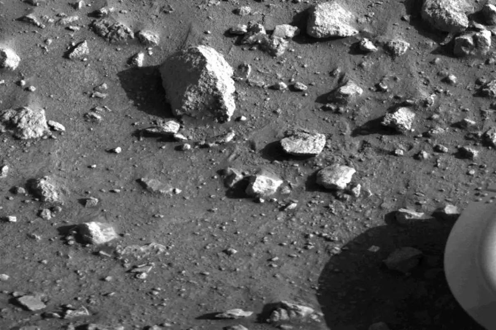
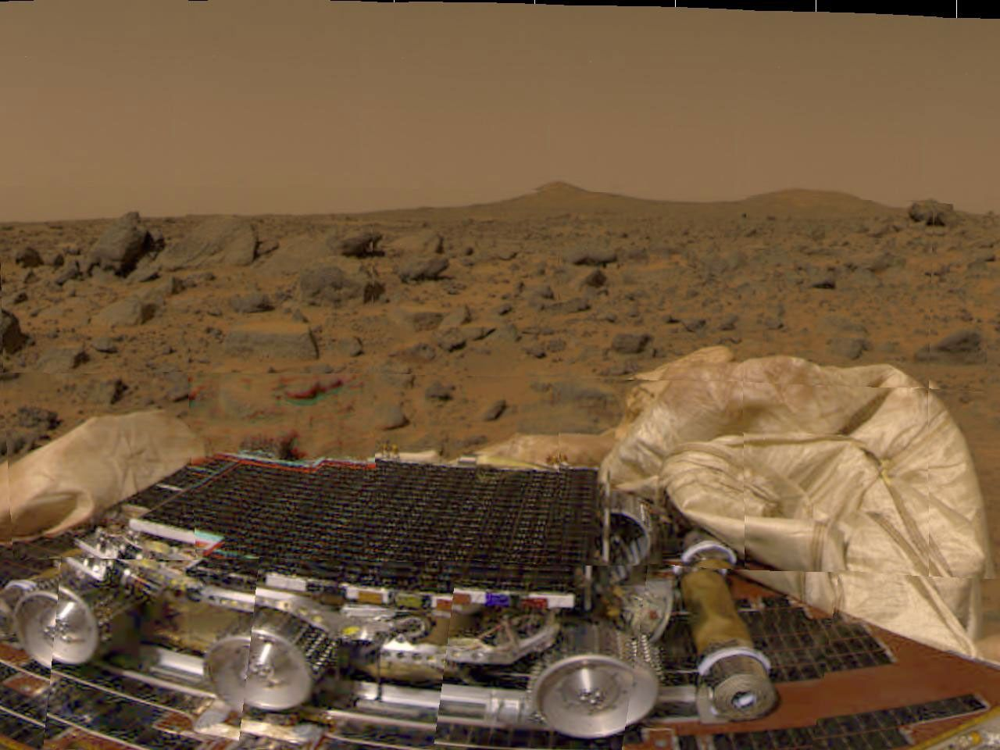
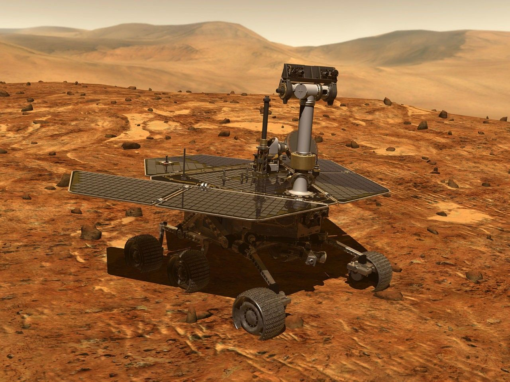
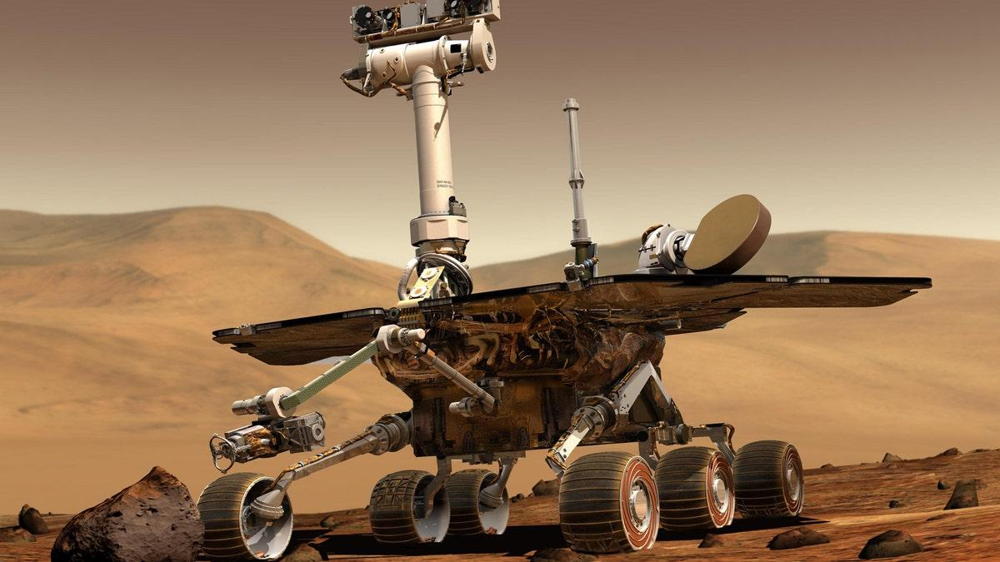

THE MOON · 1969
LUNAR MISSION
Apollo 11
The first successful crewed landing on the Moon and a defining moment in human history.
THE HISTORY OF SPACE EXPLORATION
Every mission begins with a question. Every journey leaves behind a story. Explore the historic missions that changed our understanding of the Moon and Mars.
DISCOVER THE MISSIONS ↓THE EXPLORATION ARCHIVE
Explore the historic missions that carried humanity beyond Earth and left lasting marks on distant worlds.
The first successful crewed landing on the Moon and a defining moment in human history.
The first successful American spacecraft to land and operate on the surface of Mars.
A landmark mission that delivered the Sojourner rover to explore the Martian surface.
Two robotic explorers that uncovered evidence of Mars' ancient watery past.
MISSION DOSSIER 001
HISTORICAL ARCHIVE / THE MOONOne mission. One historic landing. A legacy beyond Earth.
 JULY 20, 1969 · LUNAR SURFACE
JULY 20, 1969 · LUNAR SURFACE
THE FIRST CREWED MOON LANDING
Launched on July 16, 1969, Apollo 11 carried three astronauts on a historic journey to the Moon. Four days later, Neil Armstrong and Buzz Aldrin landed in the Sea of Tranquility while Michael Collins remained in lunar orbit.
The astronauts conducted experiments, collected lunar samples and documented the surface. After completing their work, Armstrong and Aldrin returned to the command module.
The Lunar Module's descent stage remained at the landing site. It became a lasting reminder of humanity's first crewed journey to the lunar surface.
READ OFFICIAL MISSION HISTORY ↗THE CREW BEHIND THE MISSION
MISSION DOSSIER 002 · MARS
The spacecraft that opened a new chapter in Martian exploration.

CHRYSE PLANITIA · MARSTHE FIRST SUCCESSFUL U.S. MARS LANDER
Viking 1 launched on August 20, 1975, carrying an orbiter and a lander towards Mars. After reaching the planet, its lander touched down at Chryse Planitia on July 20, 1976.
The lander studied the Martian atmosphere, surface and soil. It also carried experiments designed to investigate whether signs of life could be detected.
Viking 1 operated for more than six years. After its final transmission in November 1982, the spacecraft remained at its landing site, leaving behind an important piece of exploration history.
READ OFFICIAL MISSION HISTORY ↗MISSION FILE 03 / MARS
The mission that placed the first robotic rover on Mars.

Pathfinder lander with the Sojourner rover on Mars
MISSION REPORT
On July 4, 1997, NASA's Mars Pathfinder successfully landed in the Ares Vallis region of Mars. It delivered Sojourner, the first robotic rover to operate on another planet.
Sojourner explored the Martian surface, photographed its surroundings, and examined rocks and soil. The mission helped demonstrate a new, lower-cost way to explore Mars using a lander and a mobile rover.
Although Sojourner was designed for a seven-day mission, it continued operating for 83 days. Pathfinder's final data transmission was received on September 27, 1997.
MISSION FILE 04 / MARS

ROVER 01
Gusev Crater, Mars
Spirit landed on Mars on January 3, 2004. It explored the Martian landscape and discovered evidence that the planet once had much wetter conditions.

ROVER 02
Meridiani Planum, Mars
Opportunity landed on January 24, 2004. It discovered strong evidence of ancient water and continued exploring Mars for almost fifteen years.
THEIR LEGACY
THE END OF A MISSION IS NOT THE END OF ITS STORY
From the first steps on the Moon to robotic explorers crossing the surface of Mars, every mission has left behind discoveries, memories, and pieces of history. Their journeys may have ended, but their contributions continue to shape space exploration.
EXPLORE THE STORIES →